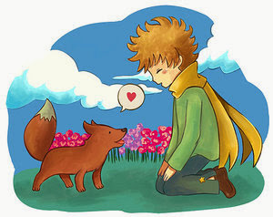

narra las aventuras de un niño, que viene de un lejano planeta, del tamaño de una caja de juguete.
cuando llega a la tierra encuentra a un aviador abandonado en medio del inmenso desierto del Sahara porque su avión había sufrido una falla mecánica.
El principito cuenta el aviador: las puestas del sol, el cuidado de su rosa, y la gran lucha contra los boababs que pueden acabar su lejano planeta.
también narra las aventuras que tiene en los seis planetas antes de llegar al planeta tierra. El primer planeta se encontraba habitado por un rey. Éste exigía que su autoridad fuera bien respetada.

Y no aceptaba la desobediencia. Era un monarca absoluto. Pero, como era muy bueno, daba órdenes razonables.
El segundo planeta estaba habitado por un hombre vanidoso, cuya soberbia impedía ver su propia ridiculez.
El vanidoso en cuanto vio llegar al principito a su planeta exclamó: ¡Ah! ¡Ah! “He aquí la vista de un admirador!” El tercer planeta estaba habitado por un bebedor.
Esta visita del principito fue breve, pero sumió al principito en una profunda tristeza. El bebedor se ahogaba en alcohol.
El cuarto planeta que había visitado el principito estaba habitado por el hombre de negocios quien vivia sumamente obsesionado por ser dueño absoluto de todo hasta llegar al limite de su propia soledad al no poder dar nada a los demás.
El quinto planeta era muy extraño y era el mas pequeño de todos. Estaba habitado por el farolero, quien realizaba una faena muy esclavizante y por ultimo el sexto planeta era un planeta diez veces más grande. Estaba habitado por un geógrafo entrado en años.
El principito se encuentra en el planeta tierra con el aviador (el narrador), con la serpiente, con el zorro (que le enseño la importancia del amor y la amistad), el guardagujas y el comerciante. La obra termino con el regreso del principito a su planeta, dejando triste al aviador.